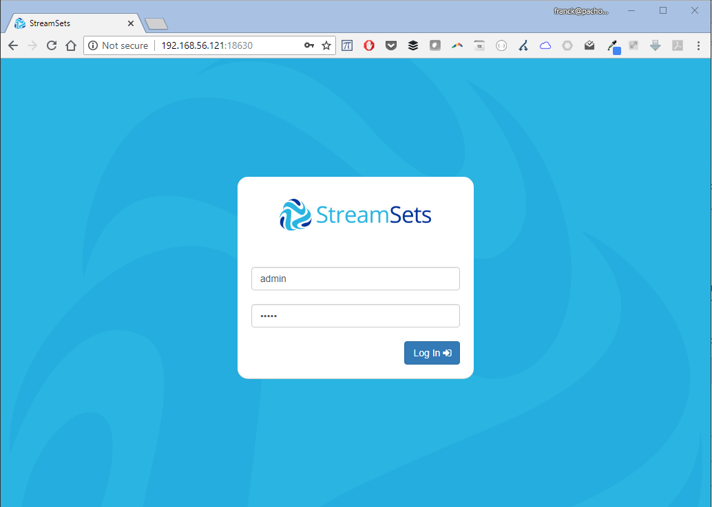
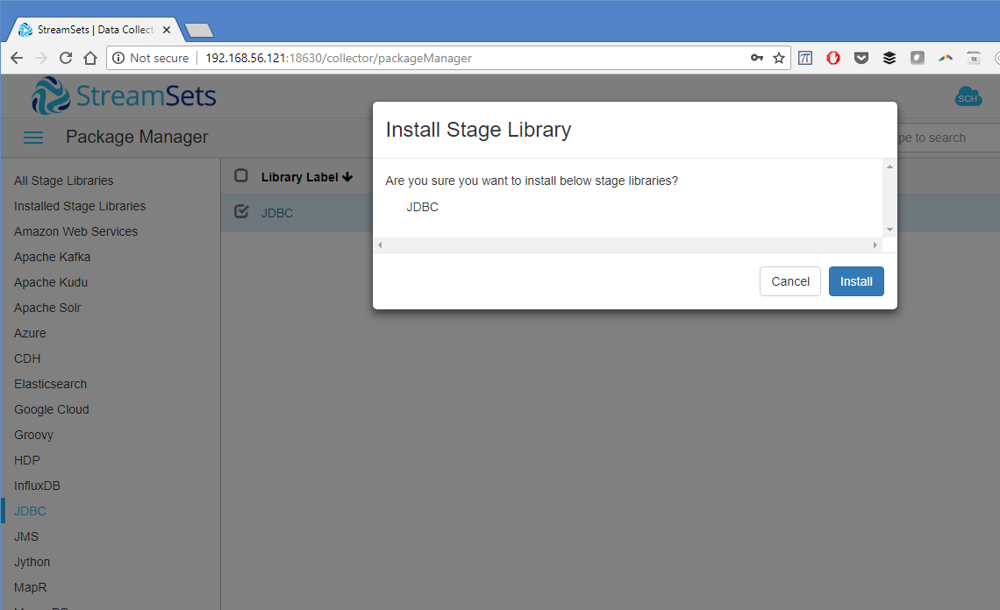
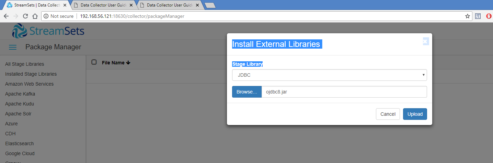
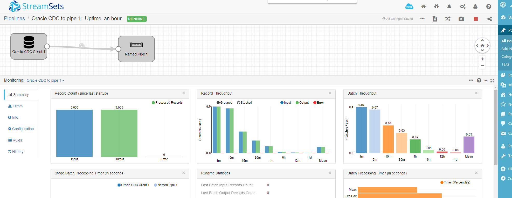
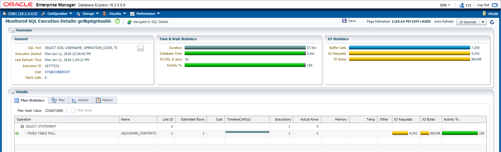

This was first published on https://www.dbi-services.com/blog/change-data-capture-from-oracle-with-streamset-data-collector/ (2018-06-11)
Republishing here for new followers. The content is related to the versions available at the publication date.
.
With this trend of CQRS architectures where the transactions are streamed to a bunch of heterogenous eventually consistent polyglot-persistence microservices, logical replication and Change Data Capture becomes an important component, already at the architecture design phase. This is good for existing products vendors such as Oracle GoldenGate (which must be licensed even to use only the CDC part in the Oracle Database as Streams is going to be desupported) or Dbvisit replicate to Kafka. But also for Open Source projects. There are some ideas running on (Debezium), VOODOO but not yet released.
Today I tested the Oracle CDC Data Collector for StreamSets. StreamSets Data Collector is an open-source project started by former people from Cloudera and Informatica, to define pipelines streaming data from data collectors. It is easy, simple and has a buch of destinations possible. The Oracle CDC is based on LogMiner which means that it is easy but may have some limitations (mainly datatypes, DDL replication and performance).
The installation guide is at streamsets.com. I choose the easiest way for testing as they provide a Docker container (https://github.com/streamsets)
# docker run --restart on-failure -p 18630:18630 -d --name streamsets-dc streamsets/datacollector
Unable to find image 'streamsets/datacollector:latest' locally
latest: Pulling from streamsets/datacollector
605ce1bd3f31: Pull complete
529a36eb4b88: Pull complete
09efac34ac22: Pull complete
4d037ef9b54a: Pull complete
c166580a58b2: Pull complete
1c9f78fe3d6c: Pull complete
f5e0c86a8697: Pull complete
a336aef44a65: Pull complete
e8d1e07d3eed: Pull complete
Digest: sha256:0428704019a97f6197dfb492af3c955a0441d9b3eb34dcc72bda6bbcfc7ad932
Status: Downloaded newer image for streamsets/datacollector:latest
ef707344c8bd393f8e9d838dfdb475ec9d5f6f587a2a253ebaaa43845b1b516d

And that’s all. I am ready to connect with http on port 18630.
The default user/password is admin/admin
The GUI looks simple and efficient. There’s a home page where you define the ‘pipelines’ and monitor them running. In the pipelines, we define sources and destinations. Some connectors are already installed, others can be automatically installed. For Oracle, as usual, you need to download the JDBC driver yourself because Oracle doesn’t allow to get it embedded for legal reasons. I’ll do something simple here just to check the mining from Oracle.
 
In ‘Package Manager’ (the little gift icon on the top) go to JDBC and check ‘install’ for the streamsets-datacollector-jdbc-lib library
Then in ‘External Libraries’, install (with the ‘upload’ icon at the top) the Oracle jdbc driver (ojdbc8.jar).
I’ve also installed the MySQL one for future tests:
File Name Library ID
ojdbc8.jar streamsets-datacollector-jdbc-lib
mysql-connector-java-8.0.11.jar streamsets-datacollector-jdbc-lib
I’ll use the Oracle Change Data Capture here, based on Oracle LogMiner. The GUI is very easy: just select ‘Oracle CDC’ as source in a new pipeline. Click on it and configure it. I’ve set the minimum here.
In JDBC tab I’ve set only the JDBC Connection String to: jdbc:oracle:thin:scott/tiger@//192.168.56.188:1521/pdb1 which is my PDB (I’m on Oracle 18c here and multitenant is fully supported by StreamSets). In the Credentials tab I’ve set ‘sys as sysdba’ as username and its password. The configuration can also be displayed as JSON and here is the corresponding entry:
"configuration": [
{
"name": "hikariConf.connectionString",
"value": "jdbc:oracle:thin:scott/tiger@//192.168.56.188:1521/pdb1"
},
{
"name": "hikariConf.useCredentials",
"value": true
},
{
"name": "hikariConf.username",
"value": "sys as sysdba"
},
{
"name": "hikariConf.password",
"value": "oracle"
},
...
I’ve provided SYSDBA credentials and only the PDB service, but it seems that StreamSets figured out automatically how to connect to the CDB (as LogMiner can be started only from CDB$ROOT). The advantage of using LogMiner here is that you need only a JDBC connection to the source – but of course, it will use CPU and memory resource from the source database host in this case.
Then I’ve defined the replication in the Oracle CDC tab. Schema to ‘SCOTT’ and Table Name Pattern to ‘%’. Initial Change as ‘From Latest Change’ as I just want to see the changes and not actually replicate for this first test. But of course, we can define a SCN here which is what must be used to ensure consistency between the initial load and the replication. ‘Dictionary source to ‘Online Catalog’ – this is what will be used by LogMiner to map the object and column IDs to table names and column names. But be carefull as table structure changes may not be managed correctly with this option.
{
"name": "oracleCDCConfigBean.baseConfigBean.schemaTableConfigs",
"value": [
{
"schema": "SCOTT",
"table": "%"
}
]
},
{
"name": "oracleCDCConfigBean.baseConfigBean.changeTypes",
"value": [
"INSERT",
"UPDATE",
"DELETE",
"SELECT_FOR_UPDATE"
]
},
{
"name": "oracleCDCConfigBean.dictionary",
"value": "DICT_FROM_ONLINE_CATALOG"
},
I’ve left the defaults. I can’t think yet about a reason for capturing the ‘select for update’, but it is there.
I know that the destination part is easy. I just want to see the captured changes here and I took the easiest destination: Named Pipe where I configured only the Named Pipe (/tmp/scott) and Data Format (JSON)
{
"instanceName": "NamedPipe_01",
"library": "streamsets-datacollector-basic-lib",
"stageName": "com_streamsets_pipeline_stage_destination_fifo_FifoDTarget",
"stageVersion": "1",
"configuration": [
{
"name": "namedPipe",
"value": "/tmp/scott"
},
{
"name": "dataFormat",
"value": "JSON"
},
...
The Oracle redo log stream is by default focused only on recovery (replay of transactions in the same database) and contains only the minimal physical information requried for it. In order to get enough information to replay them in a different database we need supplemental logging for the database, and for the objects involved:
SQL> alter database add supplemental log data;
Database altered.
SQL> exec for i in (select owner,table_name from dba_tables where owner='SCOTT' and table_name like '%') loop execute immediate 'alter table "'||i.owner||'"."'||i.table_name||'" add supplemental log data (primary key) columns'; end loop;
PL/SQL procedure successfully completed.
And that’s all. Just run the pipeline and look at the logs:
StreamSet Oracle CDC pulls continuously from LogMiner to get the changes. Here are the queries that it uses for that:
BEGIN DBMS_LOGMNR.START_LOGMNR( STARTTIME => :1 , ENDTIME => :2 , OPTIONS => DBMS_LOGMNR.DICT_FROM_ONLINE_CATALOG + DBMS_LOGMNR.CONTINUOUS_MINE + DBMS_LOGMNR.NO_SQL_DELIMITER); END;
This starts to mine between two timestamp. I suppose that it will read the SCNs to get finer grain and avoid overlapping information.
And here is the main one:
SELECT SCN, USERNAME, OPERATION_CODE, TIMESTAMP, SQL_REDO, TABLE_NAME, COMMIT_SCN, SEQUENCE#, CSF, XIDUSN, XIDSLT, XIDSQN, RS_ID, SSN, SEG_OWNER FROM V$LOGMNR_CONTENTS WHERE ((( (SEG_OWNER='SCOTT' AND TABLE_NAME IN ('BONUS','DEPT','EMP','SALGRADE')) ) AND (OPERATION_CODE IN (1,3,2,25))) OR (OPERATION_CODE = 7 OR OPERATION_CODE = 36))
This reads the redo records. The operation codes 7 and 36 are for commit and rollbacks. The operations 1,3,2,25 are those that we want to capture (insert, update, delete, select for update) and were defined in the configuration. Here the pattern ‘%’ for the SCOTT schema has been expanded to the table names. As far as I know, there’s no DDL mining here to automatically capture new tables.
Then I’ve run this simple insert (I’ve added a primary key on this table as it is not ther from utlsampl.sql):
SQL> insert into scott.dept values(50,'IT','Cloud');
And I committed (as it seems that StreamSet buffers the changes until the end of the transaction)
SQL> commit;
and here I got the message from the pipe:
/ $ cat /tmp/scott
{"LOC":"Cloud","DEPTNO":50,"DNAME":"IT"}
The graphical interface shows how the pipeline is going: 
I’ve tested some bulk loads (direct-path inserts) and it seems to be managed correctly. Actually, this Oracle CDC is based on LogMiner so it is fully supported (no mining of proprietary redo stream format) and limitations are clearly documented.
Remember that the main work is done by LogMiner, so don’t forget to look at the alert.log on the source database. With big transactions, you may need large PGA (but you can also choose buffer to disk). If you have Oracle Tuning Pack, you can also monitor the main query which retreives the redo information from LogMiner: 
You will see a different SQL_ID because the filter predicates sues literals instead of bind variables (which is not a problem here).
This product is very easy to test, so you can do a Proof of Concept within a few hours and test for your context: supported datatypes, operations and performance. By easy to test, I mean: very good documentation, very friendly and responsive graphical interface, very clear error messages,…
{kind=link}
{kind=link}
{kind=link}
{kind=link}
{kind=link}
{kind=link}